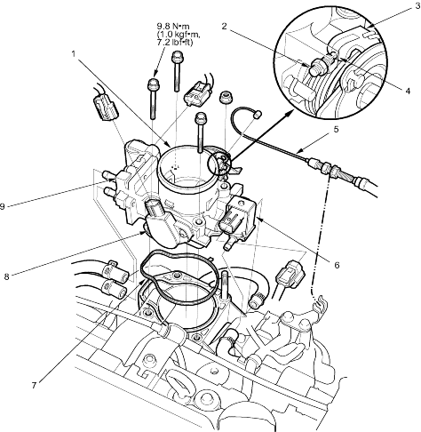

Intake Air System
Throttle Body Removal/Installation
11-151
NOTE:
Do not adjust the throttle stop screw.
After reassembly, adjust the throttle cable (see page
11-149
).
The Throttle Position (TP) sensor is not removable.

THROTTLE BODY
THROTTLE STOP SCREW
(Do not adjust)
THROTTLE LEVER
There should be no clearance
THROTTLE CABLE
EVAPORATIVE EMISSION (EVAP) CANISTER PURGE VALVE
GASKET
Replace.
THROTTLE POSITION (TP) SENSOR
IDLE AIR CONTROL (IAC) VALVE